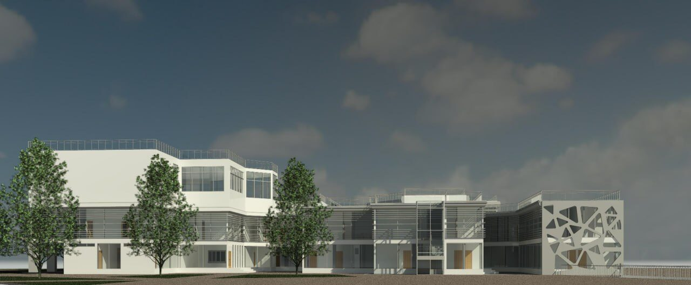
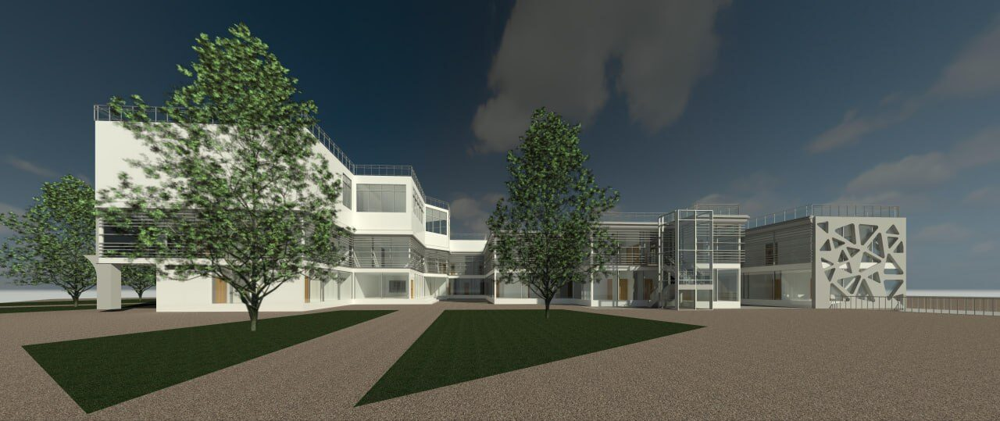
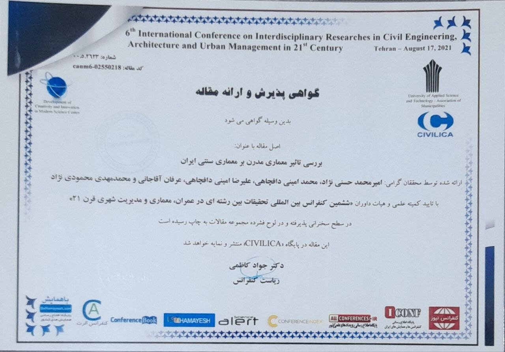

مهندس معمار و پژوهشگر ابنیه در بندرانزلی و گیلان؛ با بیش از شش سال تجربه در طراحی معماری، اخذ پروانههای ساختمانی و مستندنگاری بناهای تاریخی، از برج ساعت انزلی تا کاخ میانپشته.
۶+
سال سابقهی حرفهای
۷
پروژهی طراحی و پژوهشی
۶
فعالیت مستندنگاری و میراث
۱
مقالهی کنفرانس بینالمللی
◈ دربارهی من
معماری برای من گفتوگویی است میان آنچه بوده و آنچه باید باشد.
من امیرمحمد حسنینژاد، مهندس معمار، پژوهشگر و طراح ابنیه و عضو سازمان نظام مهندسی ساختمان استان گیلان هستم. بیش از شش سال است که در بندرانزلی، در مرز میان دریا، تالاب و تاریخ، به طراحی و مستندنگاری فضا مشغولم.
تخصص اصلی من برداشت وضع موجود و مستندنگاری ابنیهی تاریخی و ملی است؛ از برج ساعت انزلی تا مجموعهی کاخ میانپشته. در کنار آن، طراحی معماری و اخذ پروانههای ساختمانی بخش مستمر کار حرفهای من است. پیشینهی پژوهشیام در سطح بینالمللی، و ترجمهی تخصصی «ده کتاب معماری» ویترویوس، از مرجعترین متون نظری معماری جهان، تلاش من است برای آنکه میان اندیشه و عمل، پلی استوار بسازم.
آنچه انجام میدهم
طراحی معماری
از ایدهی نخستین تا نقشههای اجرایی؛ طراحیای که کارکرد، اقلیم و هویت مکان را در یک کلیت منسجم به هم میدوزد.
برداشت وضع موجود و مستندنگاری
ثبت دقیق و علمی کالبد بناهای تاریخی و موجود، بهعنوان نخستین و بنیادیترین گام در حفاظت، مرمت و بازآفرینی.
اخذ پروانهی ساختمانی
تهیهی مدارک فنی منطبق بر ضوابط شهرسازی و مقررات ملی ساختمان و پیگیری دقیق فرایند صدور پروانه.
پژوهش و ترجمهی تخصصی
پژوهش در نسبت سنت و مدرنیته در معماری ایران و ترجمهی متون مرجع نظری معماری، از جمله «ده کتاب» ویترویوس.
⎔ رزومه
سوابق شغلی
فروردین ۱۴۰۵ تاکنون
مهندس معماری · دفتر فنی و مهندسی شهرآباد
بندرانزلی
طراحی معماری پروژههای ساختمانی، تهیهی مدارک فنی و پیگیری فرایند اخذ پروانه، با دقتی که هم ضوابط را پاس میدارد و هم کیفیت فضا را.
فروردین ۱۳۹۸ تا فروردین ۱۴۰۳ · ۴ سال و ۱۱ ماه
مهندس معمار · دفتر فنی و مهندسی جاوید سازه
بندرانزلی
نزدیک به پنج سال حضور مستمر در چرخهی کامل پروژه؛ از طراحی و ترسیم نقشهها تا هماهنگی با مراجع صدور پروانه. سالهایی که شالودهی تجربهی حرفهای من را شکل داد.
سوابق تحصیلی
۱۴۰۰ تا ۱۴۰۳
کارشناسی مهندسی معماری · دانشگاه ملی مهارت شهید رجایی لاهیجان
دورهای متمرکز بر طراحی مجموعههای پیچیدهی گردشگری، درمانی و مسکونی که با پایاننامهی «مجموعهی گردشگری انزلی» به سرانجام رسید.
۱۳۹۸ تا ۱۴۰۰
کاردانی مهندسی معماری · دانشگاه ملی مهارت شهید چمران رشت
آغاز مسیر پژوهش؛ نگارش و ارائهی مقاله در ششمین کنفرانس بینالمللی تحقیقات بینرشتهای در عمران، معماری و مدیریت شهری.
نرمافزارها
AutoCAD
Revit
Adobe Photoshop
Microsoft Word
Microsoft Excel
Microsoft PowerPoint
زبانهای خارجی
انگلیسی
عربی
کرهای
⊞ پروژهها
گزیدهای از طرحهای دانشگاهی و پژوهشی؛ برای دیدن همهی تصاویر، روی هر پروژه بزنید.

۲۵ تصویر
پایاننامهی کارشناسی | ۱۴۰۳
مجموعهی گردشگری بندرانزلی
طرحی برای زمین جهانگردی «بشمن» که اقامت، فراغت و ورزش را در یک کلیت شهری گرد هم میآورد: واحدهای اقامتی در نظمی هندسی، هتلی که چون نشانهای بر مجموعه مینشیند، زمینهای ورزشی، فضای بازی کودکان و محورهای سبز پیاده. نورپردازی شبانه، مجموعه را پس از غروب به چراغی در بافت شهر بدل میکند.
طراحی مجموعهگردشگریطراحی سایتمنظر

۹ تصویر
پروژهی تحقیقاتی کارشناسی | ۱۴۰۲
بیمارستان توریستی انزلی
پاسخی معمارانه به گردشگری سلامت: احجامی سفید و افقی که در میان درختان آرام گرفتهاند و پوستهای مشبک که با الهام از گرهچینی ایرانی، نور را میپالاید و نما را هویت میبخشد. فضایی که درمان را از تجربهای سرد به تجربهای انسانی و آرام بدل میکند.
درمانیگردشگری سلامتطراحی نما
پروژهها و تجربیات آکادمیک
۱۴۰۳
مجموعهی گردشگری انزلی
پایاننامهی کارشناسی؛ طراحی یک مجموعهی جامع اقامتی، تفریحی و ورزشی در بافت شهری بندرانزلی.
پایاننامه
۱۴۰۲
بیمارستان توریستی انزلی
پروژهی تحقیقاتی کارشناسی؛ پیوند درمان و گردشگری سلامت در قالب کالبدی آرام، شفاف و انسانی.
پژوهشی · کارشناسی
۱۴۰۲
شهرک مسکونی رشت
پروژهی تحقیقاتی کارشناسی؛ سازماندهی فضای سکونت جمعی با تکیه بر مقیاس انسانی و اقلیم معتدلمرطوب.
پژوهشی · کارشناسی
۱۴۰۲
مجموعهی بینراهی و تفریحی «کویین» قزوین
طراحی مجموعهای خدماتی و تفریحی در مسیر سفر؛ مکثی خوشایند میان دو مقصد.
طراحی
۱۴۰۱
مجموعهی تفریحی و گردشگری رشت
پروژهی تحقیقاتی کارشناسی؛ بازتعریف فضای فراغت شهری در پیوند با طبیعت و فرهنگ گیلان.
پژوهشی · کارشناسی
۱۴۰۱
طراحی پارک در رشت
پروژهی تحقیقاتی کارشناسی؛ منظرسازی شهری با محوریت پیاده، گیاه بومی و حضور پذیری اجتماعی.
پژوهشی · کارشناسی
۱۳۹۹
موزهی هنرهای تجسمی رشت
پروژهی تحقیقاتی کاردانی؛ جستوجوی نور، مسیر و مکث بهمثابهی ابزارهای روایت در فضای نمایشگاهی.
پژوهشی · کاردانی
⌂ میراث و فعالیتهای داوطلبانه
پیش از هر مرمتی باید دید و ثبت کرد. این بخش، کارنامهی من در شناخت و مستندنگاری بناهایی است که حافظهی گیلان را در خود دارند.
۱۴۰۵
همکاری با میراث فرهنگی در ترسیم نقشههای بناهای تاریخی
تهیهی نقشههای دقیق از بناهای واجد ارزش، بهعنوان پشتوانهی فنی طرحهای حفاظت و مرمت.
۱۴۰۵
مشارکت در پروژههای پژوهشی تاریخ معماری
مطالعهی بناهای کهن، سازمان پلان و فنون ساخت آنها؛ برای فهم آنچه گذشتگان ساختند و چگونه ساختند.
۱۴۰۲
تحلیل بافت روستایی و جمعیتی روستاهای معاف و کرگان
بررسی میدانی ساختار کالبدی، الگوی سکونت و پویایی جمعیتی دو روستای گیلانی.
۱۴۰۱
برداشت وضع موجود کاخ میانپشتهی انزلی
مستندنگاری یکی از شاخصترین یادگارهای معماری دورهی قاجار در کرانهی تالاب انزلی.
۱۴۰۱
برداشت وضع موجود پمپ بنزین و CNG راحتی، بندرانزلی
ثبت وضعیت کالبدی و فنی یک بنای خدماتی شهری برای مطالعات بهسازی.
۱۴۰۰
برداشت وضع موجود برج ساعت انزلی
مستندنگاری نماد هویتی شهر؛ بنایی که حافظهی جمعی بندرانزلی با آن گره خورده است.
❝ کتابها و مقالات

مقالهی کنفرانس بینالمللی | ۱۴۰۰
بررسی تأثیر معماری مدرن بر معماری سنتی ایران
معماری نجیب ایرانی در جریان تجدد، بسیاری از ارزشهای خود را از دست داد؛ اما هر جا سنت بیآنکه نفی شود بهروز شد، تعاملی سازنده شکل گرفت. این مقاله با روشی توصیفی، تحلیلی و تفسیری، هویت معماری خانههای ایرانی را روایت میکند و میکوشد تقابل آن با معماری مدرن را به فرصتی برای تعامل بدل سازد.
محل ارائه: ششمین کنفرانس بینالمللی تحقیقات بینرشتهای در عمران، معماری و مدیریت شهری قرن ۲۱، تهراننمایه: سیویلیکا، ENGGCONF06_057حجم: ۱۶ صفحه
ترجمهی کهنترین رسالهی بازمانده در نظریهی معماری؛ متنی که سه اصل استواری، سودمندی و زیبایی را بنیان نهاد و پس از دو هزار سال همچنان سنگ محک اندیشهی معماری است.
✉ تماس
پروژهای در ذهن دارید یا بنایی که باید ثبت و شناخته شود؟ خوشحال میشوم بشنوم.